Hilfe & Anleitung
Antworten auf häufige Fragen und eine ausführliche Anleitung zu allen Funktionen von NotenPilot.
Häufige Fragen
Allgemein
Brauche ich eine Genehmigung der Schulleitung?
In den meisten Bundesländern ist eine Genehmigung oder Anzeige bei der Schulleitung erforderlich, wenn du Schülerdaten auf einem privaten Gerät verarbeitest. NotenPilot ist so konzipiert, dass es die technischen Anforderungen dieser Genehmigung erfüllt: lokale Speicherung, AES-256-Verschlüsselung, Passwortschutz und keine Datenübertragung an Dritte.
Werden meine Daten in die Cloud geladen?
Nein. NotenPilot speichert alle Daten ausschließlich lokal auf deinem Gerät. Es werden keinerlei Netzwerkverbindungen hergestellt – die App funktioniert komplett offline.
Brauche ich eine Internetverbindung?
Nein. NotenPilot funktioniert komplett offline. Es wird keine Internetverbindung benötigt oder hergestellt.
Gibt es ein Abo oder versteckte Kosten?
Nein. NotenPilot ist ein Einmalkauf. Alle Funktionen sind enthalten, es gibt keine In-App-Käufe, kein Abo und keine Werbung. Zukünftige Updates sind im Kaufpreis inbegriffen.
Auf welchen Geräten läuft NotenPilot?
NotenPilot läuft auf dem Mac (macOS) und dem iPad (iPadOS). Beide Versionen sind im Kaufpreis enthalten.
Läuft NotenPilot auf dem iPhone?
Nein, NotenPilot ist für Mac und iPad optimiert. Ein iPad bietet die nötige Bildschirmgröße, um Klassenlisten und Notenübersichten übersichtlich darzustellen.
Kann ich NotenPilot auf mehreren Geräten nutzen?
Ja, aber ohne automatische Synchronisierung. Exportiere deine Daten als .notenpilot-Datei vom einen Gerät und importiere sie auf dem anderen. Beachte, dass der Import alle bestehenden Daten ersetzt.
Was passiert, wenn ich die App lösche und neu installiere?
Auf dem iPad gehen beim Löschen der App alle Daten verloren. Auf dem Mac bleiben die Daten im Application-Support-Verzeichnis möglicherweise erhalten, darauf solltest du dich aber nicht verlassen. Erstelle regelmäßig Sicherungskopien!
Noten & Bewertung
Welche Noten und Zensuren kann ich erfassen?
Du kannst schriftliche Noten (Klassenarbeiten, Klausuren, Tests), mündliche Noten und tägliche Leistungen erfassen. Für jede Kategorie legst du eine eigene Gewichtung fest – NotenPilot berechnet den Notendurchschnitt automatisch. Zusätzlich kannst du Zeugnisnoten für Halbjahres- und Jahreszeugnisse verwalten.
Kann ich das Notensystem einer Klasse nachträglich ändern?
Nein. Die Wahl zwischen Noten (1–6) und Punkten (0–15) wird beim Erstellen der Klasse festgelegt und kann nicht geändert werden. Lege im Zweifel eine neue Klasse an.
Wie wird die Gesamtnote gerundet?
NotenPilot zeigt die Gesamtnote als Dezimalzahl an (z. B. 2,3). Die pädagogische Entscheidung über die Zeugnisnote liegt bei dir.
Kann ich eine Note nachträglich ändern?
Ja. Klicke einfach auf die entsprechende Zelle in der Notenübersicht und ändere den Wert.
Kann ich gelöschte Noten wiederherstellen?
Nein. Gelöschte Noten können nicht wiederhergestellt werden. Nutze regelmäßig die Export-Funktion als Sicherungskopie.
Kann ich meine Daten aus einer anderen App übernehmen?
Ja. NotenPilot kann Schüler- und Notendaten über CSV-Dateien importieren. Die meisten Noten- und Schülerverwaltungs-Apps bieten eine Exportfunktion für CSV- oder Excel-Dateien an. Ein Import-Assistent hilft dir dabei, die Spalten der importierten Datei den richtigen Feldern zuzuordnen – so geht beim Wechsel nichts verloren.
Sicherheit & Datenschutz
Wie sicher sind meine Schülerdaten?
Die Datenbank wird mit AES-256-GCM verschlüsselt, wenn die App geschlossen wird. Der Verschlüsselungsschlüssel liegt in der sicheren Keychain deines Geräts. Zusätzlich schützt ein App-eigener Passwortschutz oder Touch ID/Face ID den Zugang. Bei Verlust oder Diebstahl des Geräts sind die Daten nicht zugänglich.
Ist NotenPilot DSGVO-konform?
Ja. NotenPilot verarbeitet keine personenbezogenen Daten außerhalb deines Geräts. Es gibt kein Tracking, keine Analyse-Tools und keinen Code von Drittanbietern. Die App wurde nach den Anforderungen der DSGVO und der Schuldatenschutzverordnungen der Bundesländer entwickelt.
Ich habe mein Passwort vergessen – was tun?
Leider kann das Passwort nicht zurückgesetzt werden, da alle Daten lokal verschlüsselt sind und es keinen Server gibt, der ein Passwort-Reset ermöglicht. Ohne das Passwort ist kein Zugriff auf die gesperrte App möglich. Wenn du eine unverschlüsselte Sicherungskopie hast, kannst du die App neu installieren und die Daten importieren.
Sind meine Daten sicher, wenn mein Gerät gestohlen wird?
Wenn die App-Sperre aktiviert ist, sind deine Daten durch Passwort und Verschlüsselung geschützt. Zusätzlich sollte immer die Gerätesperre deines Mac oder iPad aktiviert sein.
Daten & Export
Wie groß kann die Datenbank werden?
NotenPilot kann problemlos viele Klassen mit Hunderten von Schülern und Tausenden von Noten verwalten. Die App wurde für den Alltag einer Lehrkraft optimiert.
Kann ich Daten zwischen NotenPilot und anderen Programmen austauschen?
Der Import von Schülerlisten ist per CSV möglich (z. B. aus Excel oder dem Schulverwaltungssystem). Der Export erfolgt im eigenen .notenpilot-Format oder als .json. PDFs können für Notenlisten, Sitzpläne und Schülerlisten erstellt werden.
Anleitung
Ausführliche Anleitung zu allen Funktionen von NotenPilot.
1. Erster Start
Beim allerersten Öffnen von NotenPilot landest du direkt auf der Hauptoberfläche – ohne Registrierung, ohne Anmeldung, ohne Internetverbindung. Die App ist sofort einsatzbereit.
Die Oberfläche im Überblick
NotenPilot ist in zwei Bereiche aufgeteilt:
- Seitenleiste (links): Hier siehst du deine Klassen, gruppiert nach Schuljahr. Am oberen Rand kannst du das Schuljahr wechseln, und über das +-Symbol legst du neue Klassen an.
- Hauptbereich (rechts): Hier wird der Inhalt der ausgewählten Klasse angezeigt. Am oberen Rand findest du einen Umschalter mit fünf Bereichen: Schüler, Fächer & Noten, Sitzplan, Checklisten und Erinnerungen.
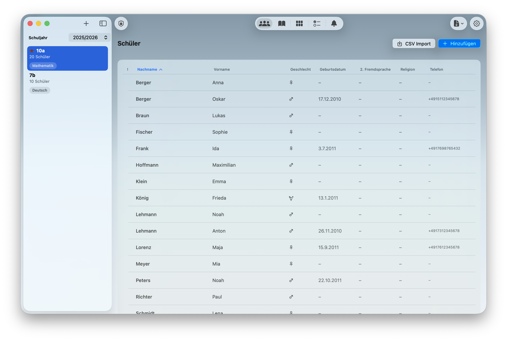
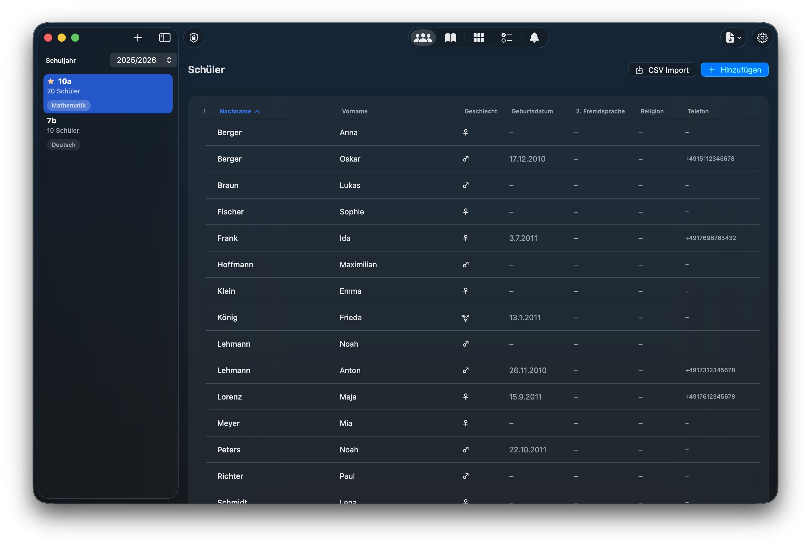
2. Die erste Klasse anlegen
- Klicke auf das +-Symbol in der Seitenleiste.
- Ein Formular öffnet sich mit folgenden Feldern:
| Feld | Beschreibung |
|---|---|
| Name | Der Klassenname, z. B. „7a", „10b" oder „Q1-Mathe" |
| Schuljahr | Das aktuelle Schuljahr (z. B. 2025/26) – wird automatisch vorgeschlagen |
| Ich bin Klassenlehrer/in | Aktiviere diese Option, wenn du Klassenleitung bist. Dadurch werden zusätzliche Felder für Schülerdaten freigeschaltet (Telefonnummer, Geburtsdatum, 2. Fremdsprache, Religionskurs, besondere Hinweise). |
| Notensystem | Wähle zwischen dem klassischen Notensystem (1–6) mit +/- oder dem Punktesystem (0–15), wie es in der Oberstufe üblich ist. Achtung: Diese Einstellung kann nach dem Erstellen der Klasse nicht mehr geändert werden. |
- Klicke auf Speichern – deine neue Klasse erscheint in der Seitenleiste.
Klasse bearbeiten oder löschen
- Rechtsklick (Mac) oder langes Drücken (iPad) auf eine Klasse in der Seitenleiste öffnet ein Kontextmenü mit den Optionen Bearbeiten, Versetzen und Löschen.
- Beim Löschen einer Klasse werden alle zugehörigen Daten (Schüler, Noten, Checklisten, Erinnerungen, Sitzpläne) unwiderruflich entfernt.
3. Schüler hinzufügen
Wähle deine Klasse in der Seitenleiste aus und stelle den oberen Umschalter auf Schüler.
Einzeln hinzufügen
- Klicke in der Symbolleiste auf Hinzufügen (oder das +-Symbol).
- Gib Nachname und Vorname ein (Pflichtfelder).
- Optional: Wähle das Geschlecht (männlich, weiblich, divers).
- Falls du Klassenlehrer/in bist, stehen zusätzliche Felder zur Verfügung: Telefonnummer, Geburtsdatum, 2. Fremdsprache, Religionskurs, besondere Hinweise.
- Klicke auf Speichern.
Per CSV-Import (Klassenliste importieren)
- Klicke auf CSV-Import in der Symbolleiste.
- Wähle deine CSV-Datei aus.
- NotenPilot erkennt die Spalten automatisch (Nachname, Vorname, Geschlecht etc.). Falls nötig, kannst du die Zuordnung manuell anpassen.
- Wähle per Checkbox aus, welche Schüler importiert werden sollen (standardmäßig alle).
- Klicke auf Importieren.
Schüler bearbeiten und löschen
- Klicke auf einen Schüler in der Liste, um die Detailansicht zu öffnen. Dort siehst du alle Informationen, Noten nach Fächern und kannst über Bearbeiten die Daten ändern.
- Über den Löschen-Button wird der Schüler mitsamt allen Noten, Checklisteneinträgen und Sitzplanpositionen entfernt.
Schülerliste sortieren und durchsuchen
- Sortieren: Wähle in der Symbolleiste die Sortierung nach Nachname, Vorname oder Geschlecht.
- Suchen: Nutze die Suchleiste, um Schüler nach Namen zu filtern.
4. Fächer einrichten
Wechsle zum Bereich Fächer & Noten. Bevor du Noten eintragen kannst, musst du mindestens ein Fach anlegen.
Fach erstellen
- Klicke auf Fach hinzufügen.
- Gib den Fachnamen ein (z. B. „Mathematik", „Deutsch", „Sport").
- Lege die Gewichtung fest:
- Schriftlich – z. B. 50 % (Klassenarbeiten, Tests)
- Mündlich – z. B. 50 % (mündliche Mitarbeit, Referate)
- Die Summe muss immer 100 % ergeben. Die Regler sind miteinander verknüpft.
- Klicke auf Speichern.
5. Noten eingeben und verwalten
Notensystem
NotenPilot unterstützt zwei Notensysteme:
Klassisches Notensystem (1–6)
| Eingabe | Bedeutung |
|---|---|
| 1+ | Sehr gut plus (Wert: 0,75) |
| 1 | Sehr gut (Wert: 1,0) |
| 1- | Sehr gut minus (Wert: 1,25) |
| 2+ | Gut plus (Wert: 1,75) |
| 2 | Gut (Wert: 2,0) |
| … | … |
| 5- | Mangelhaft minus (Wert: 5,25) |
| 6 | Ungenügend (Wert: 6,0) |
Punktesystem (0–15)
| Punkte | Entspricht Note |
|---|---|
| 15–13 | Sehr gut (1) |
| 12–10 | Gut (2) |
| 9–7 | Befriedigend (3) |
| 6–4 | Ausreichend (4) |
| 3–1 | Mangelhaft (5) |
| 0 | Ungenügend (6) |
Einzelne Note eintragen
- Wechsle zum Bereich Fächer & Noten und wähle das gewünschte Fach.
- In der Tabellenansicht klicke auf die Zelle des Schülers in der gewünschten Spalte.
- Es öffnet sich ein Eingabedialog mit folgenden Feldern: Bezeichnung, Notenwert, Bereich (Schriftlich/Mündlich), Gewichtung und Datum.
Sammelnoteneingabe (empfohlen für Klassenarbeiten)
- Klicke in der Symbolleiste auf Sammelnoteneingabe.
- Wähle Bezeichnung, Bereich und Gewichtung.
- Es erscheint eine scrollbare Liste aller Schüler. Trage die Note für jeden Schüler ein.
- Klicke auf Speichern – alle Noten werden gleichzeitig gespeichert.
Notenberechnung
- Schriftlicher Schnitt: Gewichteter Durchschnitt aller schriftlichen Teilnoten.
- Mündlicher Schnitt: Gewichteter Durchschnitt aus den mündlichen Teilnoten und dem Durchschnitt der täglichen mündlichen Noten.
- Gesamtnote: Kombination aus schriftlichem und mündlichem Schnitt gemäß der Fachgewichtung (z. B. 60 % schriftlich, 40 % mündlich).
6. Notenübersicht – Tabelle und Karten
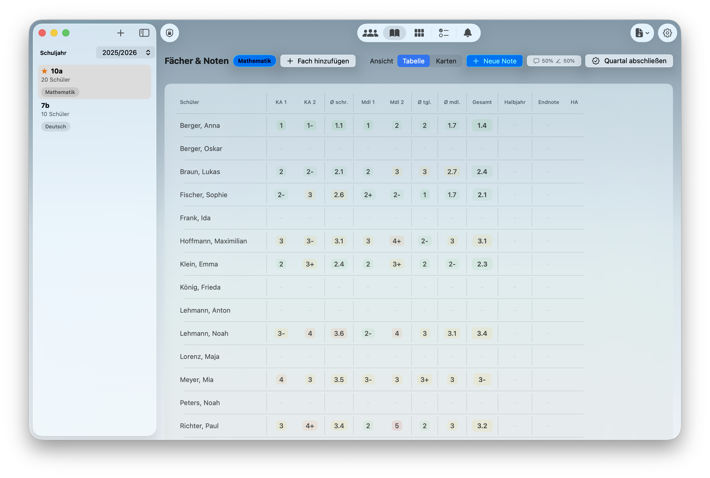
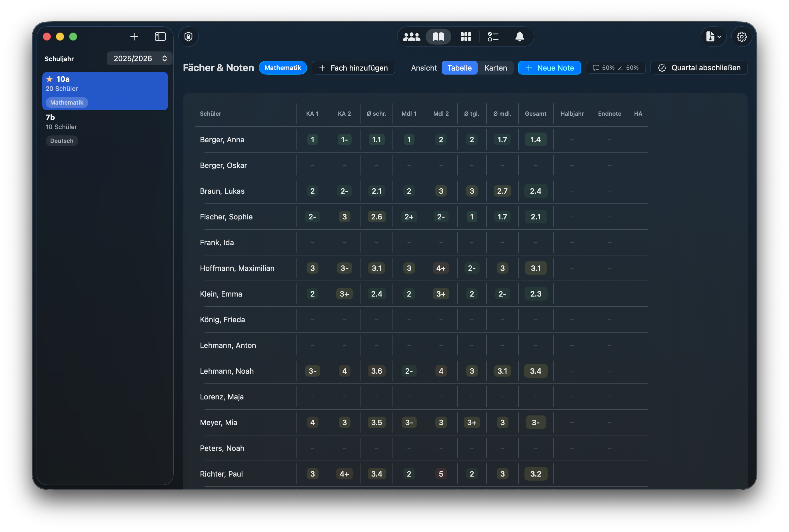
Tabellenansicht
Die Tabellenansicht zeigt alle Schüler und Noten auf einen Blick:
- Spalten: Schülername | Schriftliche Noten | Ø Schriftlich | Mündliche Noten | Tägliche Noten | Ø Mündlich | Gesamtnote
- Noten werden farblich hinterlegt: Grün (gut), Gelb (befriedigend), Orange (ausreichend), Rot (mangelhaft/ungenügend) – dezente Pastellfarben.
- Klicke auf eine Zelle, um die Note zu bearbeiten.
- Die Gesamtnote wird automatisch berechnet und prominent angezeigt.
Kartenansicht
Die Kartenansicht zeigt jeden Schüler als eigene Karte mit Name, Durchschnitten und Gesamtnote – besonders geeignet für die Übersicht im Unterricht oder auf dem iPad.
7. Tägliche mündliche Noten
Neben den „großen" Teilnoten (Klassenarbeiten, Tests, Referate) kannst du in NotenPilot auch tägliche mündliche Noten für die Mitarbeit erfassen.
Tägliche Note eintragen
- In der Notenübersicht findest du die Spalte Tägliche Noten.
- Klicke auf die Zelle eines Schülers.
- Gib die Note ein und optional eine Bemerkung.
Archivierung (Quartal zurücksetzen)
Am Ende eines Quartals kannst du die täglichen Noten archivieren. Archivierte Noten fließen nicht mehr in den aktuellen Mündlich-Schnitt ein – so startest du jedes Quartal mit einem frischen Schnitt. Die archivierten Noten bleiben gespeichert.
Hausaufgaben vergessen
NotenPilot ermöglicht es, zu protokollieren, wenn ein Schüler die Hausaufgaben vergessen hat. Jeder Eintrag besteht aus einem Datum und einer optionalen Bemerkung und wird in der Schülerdetailansicht angezeigt.
8. Sitzplan
Jedes Fach kann seinen eigenen Sitzplan haben – praktisch, wenn Schüler in verschiedenen Fächern unterschiedlich sitzen.
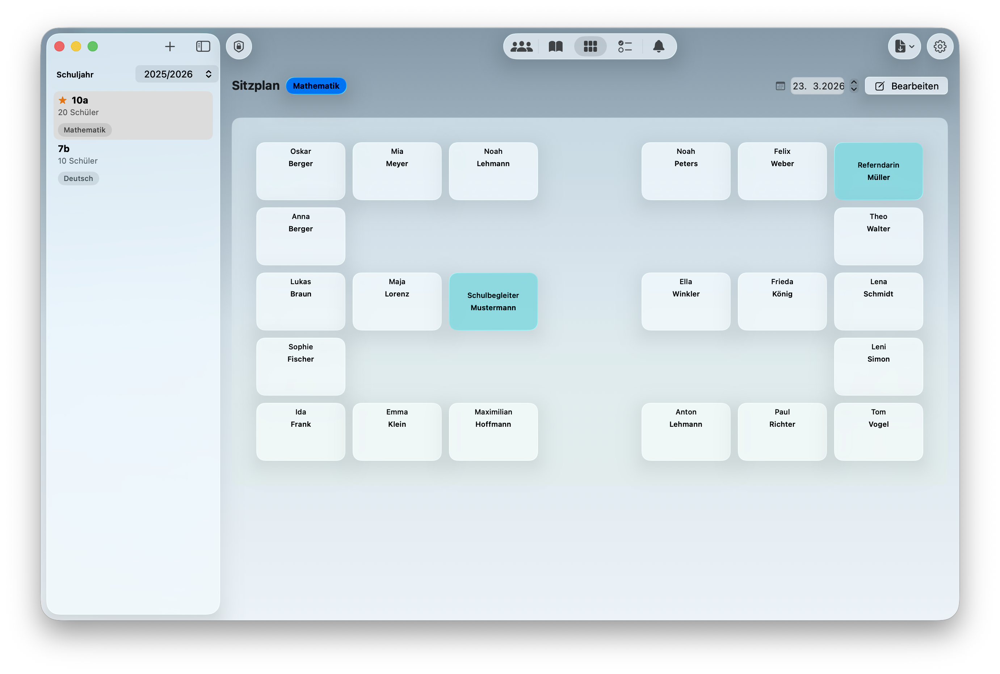
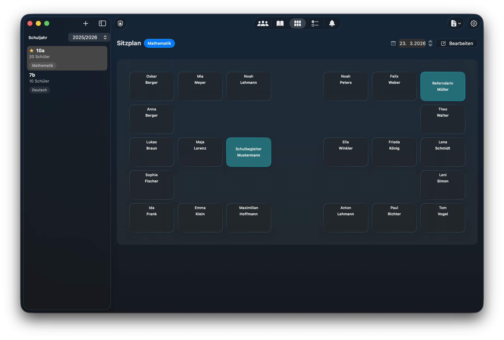
Sitzplan einrichten
- Wechsle zum Bereich Sitzplan und wähle das gewünschte Fach.
- Klicke auf Bearbeiten (Stift-Symbol in der Symbolleiste).
- Du siehst ein Raster (standardmäßig 5 Zeilen × 6 Spalten) und rechts eine Liste der noch nicht platzierten Schüler.
- Ziehe Schüler per Drag & Drop aus der Liste auf einen freien Platz im Raster.
- Klicke auf Speichern, wenn du fertig bist.
Externe Personen
Du kannst auch Personen im Sitzplan platzieren, die keine Schüler der Klasse sind (z. B. Integrationshelfer, Referendare). Klicke im Bearbeitungsmodus auf Externe Person hinzufügen und gib den Namen ein.
Rastergröße anpassen
Die Größe des Sitzplan-Rasters wird beim Erstellen des Fachs festgelegt, kann aber nachträglich angepasst werden. Beachte: Wenn du das Raster verkleinerst, können bereits platzierte Schüler verdrängt werden.
9. Checklisten
Checklisten sind ideal für Geldeinsammeln, Einverständniserklärungen, Materialabgaben und ähnliche Aufgaben.
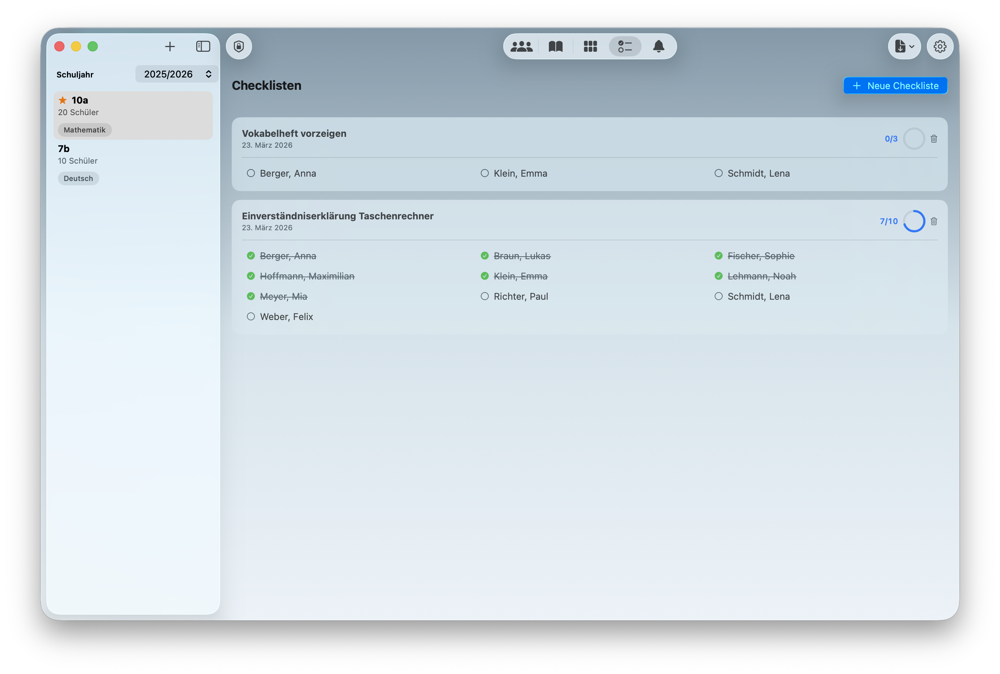
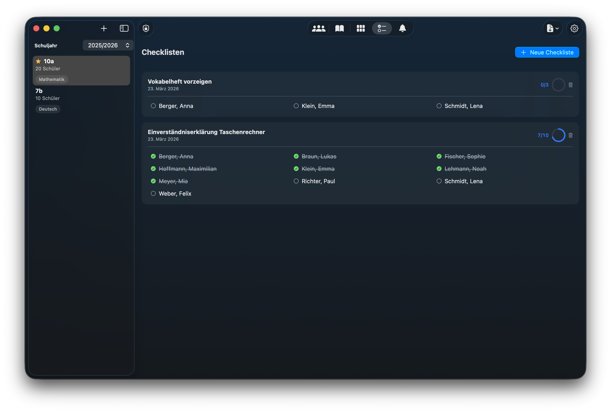
Checkliste erstellen
- Wechsle zum Bereich Checklisten.
- Klicke auf Neue Checkliste in der Symbolleiste.
- Gib einen Titel ein (z. B. „Einverständniserklärung Klassenfahrt").
- Optional: Filtere nach Gruppen (z. B. nur Schülerinnen, nur Ethik-Kurs).
- Klicke auf Erstellen – die Checkliste wird automatisch mit allen passenden Schülern befüllt.
Checkliste verwenden
- Jede Checkliste zeigt alle Schüler als Checkboxen an.
- Hake Schüler ab, sobald sie die Aufgabe erledigt haben.
- Am oberen Rand siehst du den Fortschritt (z. B. „8 von 25 abgehakt") mit einer visuellen Fortschrittsanzeige.
10. Erinnerungen
Erinnerungen helfen dir, wichtige Termine und Aufgaben pro Klasse im Blick zu behalten.
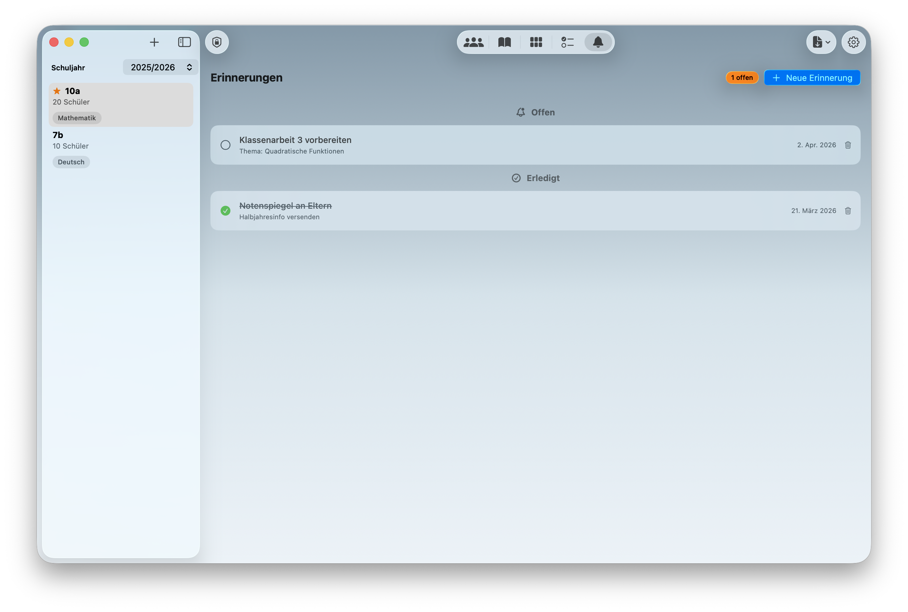
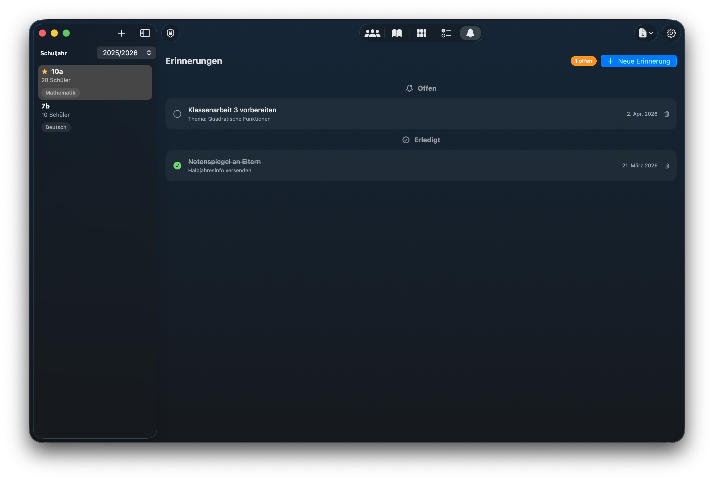
Erinnerung erstellen
- Wechsle zum Bereich Erinnerungen.
- Klicke auf Neue Erinnerung in der Symbolleiste.
- Gib einen Titel ein, optional eine Notiz, und wähle ein Datum.
- Klicke auf Speichern.
Erinnerungen verwalten
- Erinnerungen werden in zwei Gruppen angezeigt: Offen und Erledigt.
- Überfällige Erinnerungen werden rot markiert.
- In der Seitenleiste siehst du neben jeder Klasse ein Badge mit der Anzahl offener Erinnerungen.
11. PDF-Export und Drucken
NotenPilot kann verschiedene Listen und Übersichten als professionelle PDF-Dokumente im A4-Format exportieren.
| Export | Inhalt |
|---|---|
| Blanko-Schülerliste | Schülernamen mit leeren Spalten – ideal zum Ausdrucken |
| Liste mit allen Infos | Schülernamen mit allen verfügbaren Informationen |
| Notenliste | Aktuelle Noten eines Fachs in Tabellenform |
| Sitzplan | Visueller Sitzplan eines Fachs |
| Schülerkarten | Individuelle Karten mit Kontaktinformationen pro Schüler |
PDF erstellen
- Klicke auf das Export-Symbol in der Symbolleiste.
- Wähle den gewünschten Export-Typ.
- Bei Notenliste und Sitzplan: Wähle das Fach.
- Das PDF wird erstellt und auf dem Mac in der Standard-PDF-App geöffnet, auf dem iPad erscheint das Teilen-Menü.
12. Daten sichern und wiederherstellen
Automatische Sicherung
NotenPilot erstellt automatische Sicherungskopien beim Start der App (maximal einmal pro Stunde) und vor jedem Datenimport. Diese Sicherungen sind verschlüsselt.
Manueller Export
- Öffne die Einstellungen (Zahnrad-Symbol).
- Klicke auf Daten exportieren.
- Wähle das Format:
| Format | Dateiendung | Beschreibung |
|---|---|---|
| Verschlüsselt | .notenpilot | Empfohlen. AES-256-Verschlüsselung mit Passwort (min. 8 Zeichen). |
| Unverschlüsselt | .json | Klartext-Export. Achtung: Enthält personenbezogene Daten ohne Verschlüsselung. |
.notenpilot-Datei auf einen USB-Stick oder einen sicheren Speicherort.Daten importieren (wiederherstellen)
- Öffne die Einstellungen und klicke auf Daten importieren.
- Wähle eine
.notenpilot- oder.json-Datei. - Bei verschlüsselten Dateien: Gib das Passwort ein.
Daten auf ein neues Gerät übertragen
- Exportiere auf dem alten Gerät eine verschlüsselte
.notenpilot-Datei. - Übertrage die Datei auf das neue Gerät (z. B. per AirDrop, USB-Stick oder Dateien-App).
- Öffne NotenPilot auf dem neuen Gerät und importiere die Datei.
13. Sicherheit – Passwort und biometrische Sperre
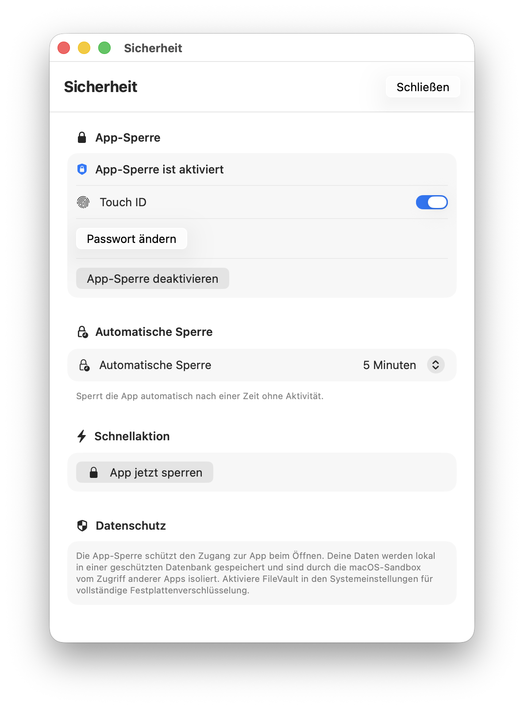
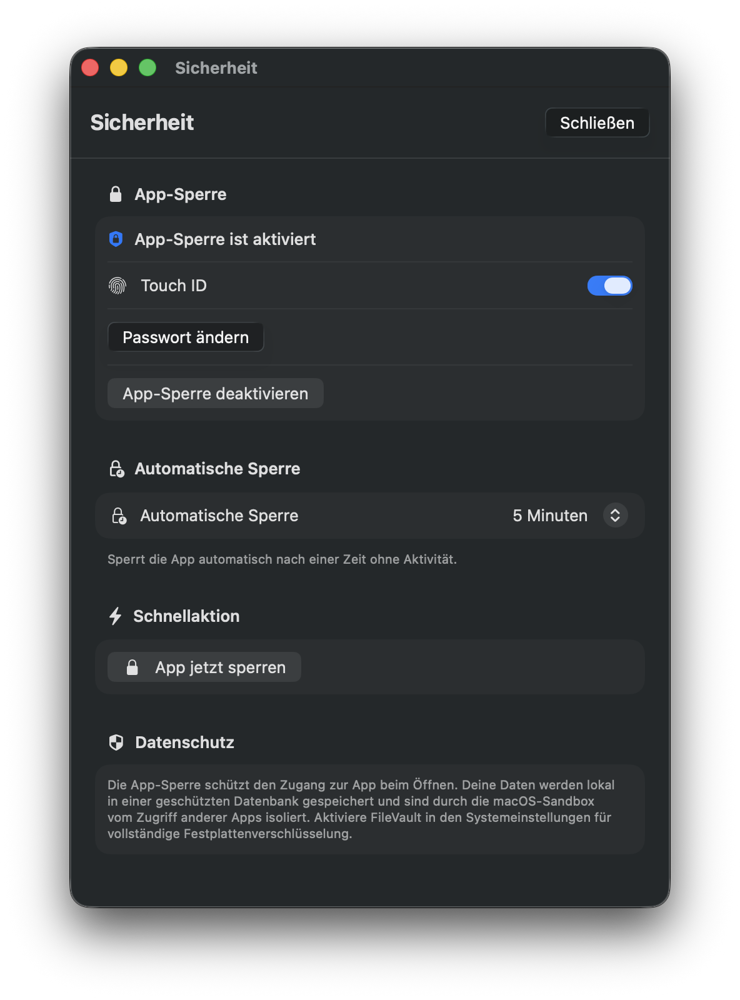
App-Sperre einrichten
- Öffne die Sicherheitseinstellungen:
- Mac: Über das Menü „NotenPilot" → „Sicherheitseinstellungen" (oder Cmd+Shift+L zum sofortigen Sperren)
- iPad: Über die Einstellungen in der Symbolleiste
- Aktiviere die App-Sperre.
- Lege ein Passwort fest (mindestens 8 Zeichen).
- Optional: Aktiviere die biometrische Entsperrung (Touch ID, Face ID oder Optic ID).
Wie die Sperre funktioniert
- Beim Start der App musst du dich authentifizieren.
- Nach einer einstellbaren Inaktivitätszeit wird die App automatisch gesperrt.
- Du kannst die App jederzeit manuell sperren (Mac: Cmd+Shift+L).
Schutz vor Brute-Force-Angriffen
Nach 3 fehlgeschlagenen Passworteingaben wird die App vorübergehend gesperrt. Bei weiteren Fehlversuchen steigt die Wartezeit exponentiell an (bis zu 60 Sekunden).
Auto-Lock konfigurieren
In den Sicherheitseinstellungen kannst du festlegen, nach wie viel Inaktivität die App automatisch gesperrt wird: Nie, 1 Minute, 2 Minuten, 5 Minuten, 10 Minuten, 15 Minuten, 30 Minuten oder 60 Minuten.
14. Einstellungen
Die Einstellungen erreichst du über das Zahnrad-Symbol in der Symbolleiste.
Erscheinungsbild
- Automatisch – folgt der Systemeinstellung (Hell/Dunkel)
- Hell – immer heller Hintergrund
- Dunkel – immer dunkler Hintergrund
Notenfarben
Aktiviere oder deaktiviere die farbliche Hinterlegung der Notenwerte in der Tabelle.
15. Schuljahreswechsel – Klasse versetzen
- Rechtsklick (Mac) oder langes Drücken (iPad) auf die Klasse in der Seitenleiste.
- Wähle Versetzen.
- NotenPilot erstellt automatisch eine neue Klasse im nächsten Schuljahr:
- Der Klassenname wird hochgestuft (z. B. „7a" → „8a").
- Alle Schüler werden übernommen (ohne Noten).
- Alle Fächer werden übernommen (ohne Notenkategorien).
- Checklisten und Erinnerungen werden übernommen.
- Alle Noten werden zurückgesetzt.
- Die alte Klasse bleibt als Archiv erhalten.
16. Datenschutz (DSGVO)
NotenPilot wurde von Grund auf für den Umgang mit besonders schützenswerten personenbezogenen Daten entwickelt.
Grundprinzipien
| Prinzip | Umsetzung |
|---|---|
| Datenminimierung | Es werden nur die Daten erfasst, die für die Notenverwaltung notwendig sind. |
| Lokale Speicherung | Alle Daten bleiben ausschließlich auf deinem Gerät. Kein Upload in eine Cloud. |
| Keine Netzwerkzugriffe | NotenPilot stellt keine Internetverbindung her. |
| Verschlüsselung | Die Datenbank wird auf dem Gerät verschlüsselt gespeichert (AES-256). |
| Zugriffskontrolle | Optionale Passwort- und Biometrie-Sperre. |
Technische Sicherheitsmaßnahmen
- Datenbank-Verschlüsselung: AES-GCM-Verschlüsselung der gesamten Datenbank (at rest).
- Export-Verschlüsselung: PBKDF2-Schlüsselableitung mit 600.000 Iterationen + AES-GCM.
- Passwort-Speicherung: PBKDF2-Hash mit Salt (100.000 Iterationen) in der Keychain.
- iPadOS: Zusätzlicher Data-Protection-Schutz durch das Betriebssystem.
- macOS: App-Sandbox verhindert den Zugriff anderer Programme.
- Temporäre Dateien: Zwischendateien werden beim App-Start automatisch gelöscht.
Empfehlungen für Lehrkräfte
- Aktiviere die App-Sperre mit einem starken Passwort.
- Exportiere regelmäßig eine verschlüsselte Sicherungskopie.
- Sperre dein Gerät immer, wenn du es unbeaufsichtigt lässt.
- Gib unverschlüsselte Exporte nicht weiter – diese enthalten personenbezogene Daten im Klartext.
Keine Drittanbieter
NotenPilot hat keine externen Abhängigkeiten. Der gesamte Code wurde selbst entwickelt. Es werden keine Daten an Dritte weitergegeben.